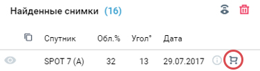

Каталог-Космоснимки — приложение для поиска, подбора и заказа космосъемки с различных спутников дистанционного зондирования Земли. Поиск выполняется по базе метаданных космических снимков на весь мир, которая ежедневно обновляется от ключевых операторов спутниковых систем: DigitalGlobe, Astrium, Роскосмос и др. В результатах поиска можно посмотреть: текстовые метаданные и квик-луки (загрубленное изображение). Поиск и отбор съемки возможен без регистрации, для заказа снимков необходимо зарегистрироваться.
О приложении
Быстрая инструкция по шагам 1-3
Шаг 1 — задать условия поиска
- Задать территорию интереса: загрузить векторный контур из файла (см. раздел “Загрузка контура поиска из файла”) или нарисовать границу в окне карты с помощью инструментов;
Задать период съемки, указав начальную и конечную дату периода. У вас есть возможность поиска космоснимков в соответствии с необходимыми вам сезонными требованиями. Для этого в строке периода поиска указывается необходимый месячный интервал в пределах нужного временного периода (годового). После необходимо активировать иконку «Данные за каждый год»;
- Выбрать спутники;

- Нажать кнопку "Найти снимки".

Шаг 2 — отобрать снимки
- В результатах поиска добавить интересующий снимок в Корзину, для чего кликнуть по иконке корзины;

- Результаты поиска и отбора снимков можно скачать (см. раздел Скачивание результатов) или запомнить по ссылке (см. раздел Сохранение результатов по ссылке).
Шаг 3 — оформить заказ
- Для оформления заказа необходимо авторизоваться или зарегистрироваться;

- Нажать кнопку Оформить заказ в нижней части левой панели;
- Заполнить необходимые поля формы и нажать Заказать;

- Специалисты компании СКАНЭКС свяжутся с вами по вопросу выполнения заказа.
Стереопары
Приложение также позволяет выделять и скачивать стереопарные снимки. После того как вы задали параметры поиска, в таблице найденных снимков вы обнаружите следующую иконку:
Если в вашей выборке будут иметься стереопары, то вы сможете их отсортировать нажатием на неё.
Для загрузки контура района поиска необходимо нажать кнопку Загрузить контур на верхней панели инструментов

Поддерживаются следующие форматы векторных файлов: shp, tab, mif, kml, json. Для того чтобы загрузить границы в форматах, которые состоят из нескольких файлов (shp, tab, mif), необходимо все файлы предварительно скопировать в zip-архив и потом архив загрузить в приложение. Тип геометрии зоны поиска может быть: точкой, линией, полигоном.